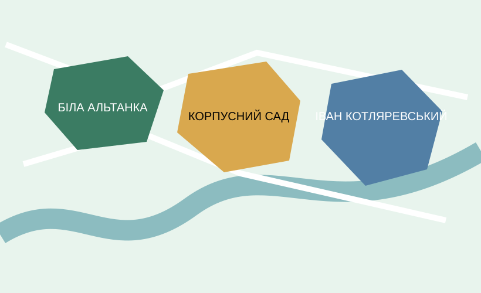

Моя Батьківщина | Карта посилань | Навігаційна карта | Мої одногрупники
Наведіть курсор на кольорову область карти, щоб побачити підказку.

Одна з найвідоміших пам’яток Полтави на Івановій горі.
Парк у центрі міста, поруч із Круглою площею.
Ім’я письменника пов’язане з Полтавою; у місті є його музей-садиба.
Студент групи 304-ТН Самойленко О. І.